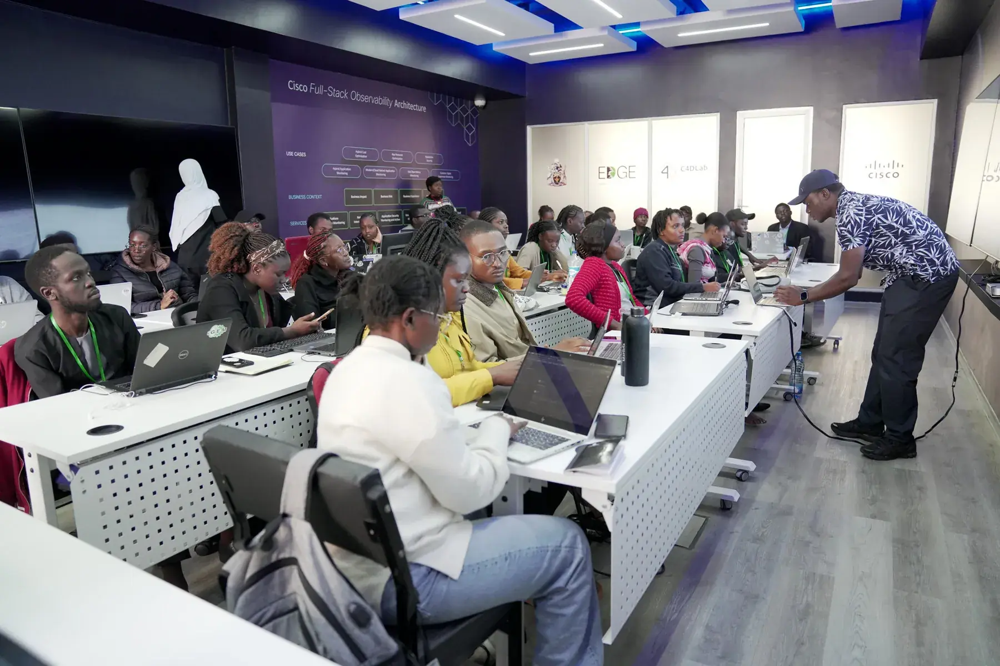
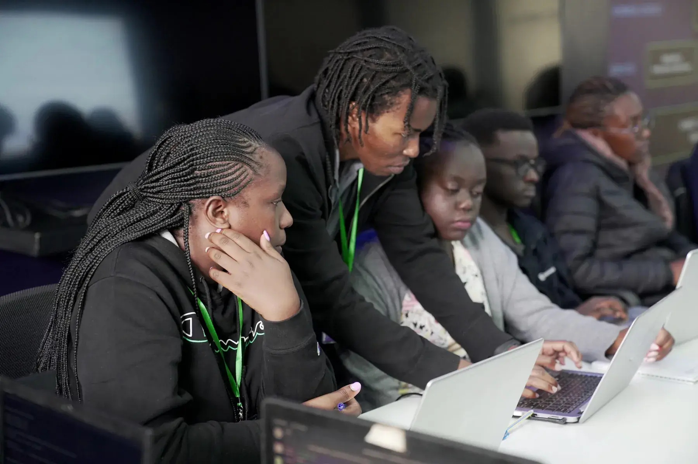

Python workshops
Three weeks. Five tracks. One continent.
CSA Africa runs annual three-week Python programming workshops in collaboration with host universities across Africa.
How we work
Hosted by universities, built for beginners and beyond
We’ve partnered with institutions in Nigeria, Rwanda, and Kenya, with plans to expand further across the continent.
Our three-week workshops are intensive and hands-on with multiple tracks catering to different experience levels:
- 01
Python Fundamentals (for beginners)
- 02
Python for Software Engineering
- 03
Python for Data Science
- 04
Python for Machine Learning
- 05
Python for Internet of Things (IoT)

Hands-on coding · CSA Africa
Our workshop model
Two weeks of learning. One week of building.
WEEK 1–2
Learning & doing
Each track combines live instruction with extensive hands-on coding sessions. International instructors from the University of Glasgow and other UK institutions work alongside in-country tutors who provide personalised support.
WEEK 3
Building & presenting
Participants form diverse teams and spend the final week developing projects that address real challenges in their communities. On the final day, teams present their work by showing their code, defending their design decisions, explaining their problem-solving process, and demonstrating impact potential.
Application timeline
- Step 01
January / February
Call for applications opens
- Step 02
May
Selected participants notified
- Step 03
July / August
Workshop takes place
Comprehensive support
Nobody should miss out on logistics
The workshop is free at the point of need. What usually stops people from attending, we cover.
Accommodation
Provided for participants traveling from outside the host city
Childcare
On-site support for mothers attending with young children
Travel support
Road transportation covered within regional zones (e.g., West Africa, East Africa)
Mentorship
Ongoing connection with instructors and alumni networks beyond the three weeks
Our participants
Who the workshops are for
CSA Africa workshops are designed for university students, early-career researchers, and professionals who are eager to build their programming confidence and apply computing skills to their studies, research, or work.
Our participants come from diverse academic backgrounds: mathematics, engineering, medicine, pharmacy, nursing, law, economics, business administration, and the humanities.

What participants gain
Confidence
Clarity about their next steps in their tech journey
Community
Connections with like-minded peers, potential collaborators, and mentors
Practical experience
A completed project addressing a real-world problem
Ongoing support
Access to alumni networks and continued mentorship
After the workshop
Within 3–12 months, participants report…
- Securing fellowships and scholarships for further study
- Landing internships and tech jobs
- Winning hackathons and coding competitions
- Building solutions that tackle local challenges in health, agriculture, education, and governance
- Becoming tutors and mentors for future CSA cohorts
Many participants describe CSA Africa as a turning point in their technical skills, and in their belief that they belong in technology and can contribute meaningfully to its future.
Every edition
Past and future workshops

University of Nairobi, Kenya
14 - 31 July (3 weeks)

NitHub, University of Lagos, Nigeria
18 July - 03 August (3 weeks)

Online (COVID pandemic era)
30 August - 10 September (2 weeks)

University of Rwanda, Kigali
19 - 30 August (2 weeks)

University of Ibadan, Nigeria
30 July - 10 August (2 weeks)
Join our waitlist
Be the first to know when applications open

Get involved
Ready to Transform Lives?
Join us in empowering the next generation of African tech innovators.